To start this game and login to every level you must use a SSH Client. My preference of choice is MobaXTerm and my second choice is Putty.
Host: bandit.labs.overthewire.org
Port: 22 ( As of January 2018 the port is now 2220 )
Bandit Level 0
http://overthewire.org/wargames/bandit/bandit0.htmlIn their website they give us the username and password for bandit0 and we have to find the password for bandit1
Username: bandit0
Password: bandit0
Bandit Level 0 ‚Üí Level 1
http://overthewire.org/wargames/bandit/bandit1.htmlWhile logged into the bandit0 user profile I ran the “ls” command to see if I find any useful files. The output showed that there is a file named “readme”. I read the file using “cat readme” and it contained 1 line with the following text: “boJ9jbbUNNfktd78OOpsqOltutMc3MY1”. I tried to use the string from the file to log into bandit1 and it worked.
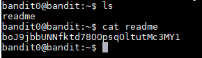Username: bandit1
Password: boJ9jbbUNNfktd78OOpsqOltutMc3MY1
Bandit Level 1 ‚Üí Level 2
http://overthewire.org/wargames/bandit/bandit2.htmlOn the bandit website it says that the next password is saved in a file named -. When I logged into the account and ran "ls" I saw the file. I then ran "cat <-" and I saw that the password is: CV1DtqXWVFXTvM2F0k09SHz0YwRINYA9. In order to read files that start with a dash, you have to redirect them to stdin with the < operator.
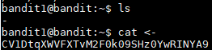Username: bandit2
Password: CV1DtqXWVFXTvM2F0k09SHz0YwRINYA9
Reference: https://unix.stackexchange.com/questions/16357/usage-of-dash-in-place-of-a-filename
Bandit Level 2 ‚Üí Level 3
http://overthewire.org/wargames/bandit/bandit3.htmlThe password for the next user is stored in a file called spaces in this filename. I ran " cat "spaces in this filename" " and received the next password: UmHadQclWmgdLOKQ3YNgjWxGoRMb5luK. In order to read files with spaces in the name you have to put the file name in quotation marks.
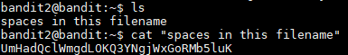Username: bandit3
Password: UmHadQclWmgdLOKQ3YNgjWxGoRMb5luK
Bandit Level 3 ‚Üí Level 4
http://overthewire.org/wargames/bandit/bandit4.htmlThe password is stored in a hidden file in the inhere directory. I ran "ls" to see what files and directories there are and then I ran "cd" to move into the inhere folder. Then I ran "ls -a" to see all of the files including the hidden ones. All hidden files and folders in linux are stored with a dot in front of their name. The hidden file is named .hidden and after running "cat .hidden" I saw that the next password is pIwrPrtPN36QITSp3EQaw936yaFoFgAB.
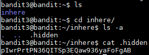Username: bandit4
Password: pIwrPrtPN36QITSp3EQaw936yaFoFgAB
Bandit Level 4 ‚Üí Level 5
http://overthewire.org/wargames/bandit/bandit5.htmlThe password is stored in file inside the inhere folder, most of the files in the directory as written in binary and only one of them has human readable text. I "cd" into the folder and saw all of the files in the folder. When trying to read the binary files with "cat" I would get something I could not read. I could tried to read every file and see which one has the password but I can also have a loop that gives me information on the files to see which one is the human readable one. To do this I ran the command below:
for x in {0..9}; do file ./-file0$x; done
For loop will run from 0 through name and save the variable as x. With the help of the command "file" which gives you information about any file passed as a parameter. The files were names -file00 through -file09 and therefore we have to add the ./ in order for file to read the files. After the command finished I received the following output
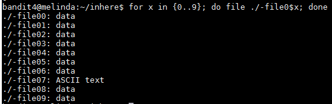The password seems to be in the -file07 file and to read it I ran "cat <-file07" and the password is koReBOKuIDDepwhWk7jZC0RTdopnAYKh
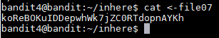Username: bandit5
Password: koReBOKuIDDepwhWk7jZC0RTdopnAYKh
Bandit Level 5 ‚Üí Level 6
http://overthewire.org/wargames/bandit/bandit6.htmlThe password for the next level is stored in a file somewhere under the inhere directory and has all of the following properties:
human-readable
1033 bytes in size
not executable
To start I "cd" into the inhere folder and ran "ls" to see the files and folders and noticed that there were a bunch of folder and inside those folders a couple of files.
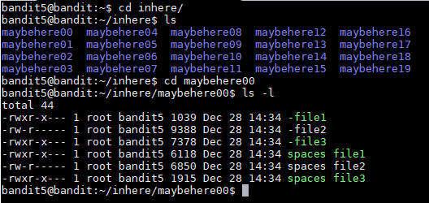To make my life easier and not have to read every file I tried to "find" a way to look for the specific file with the properties given. I looked through the manual page of the find command and looked for ways of pointing out the properties of the file. I found the -size, -type, and -executable options.
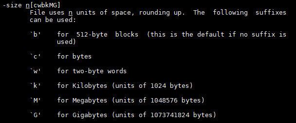 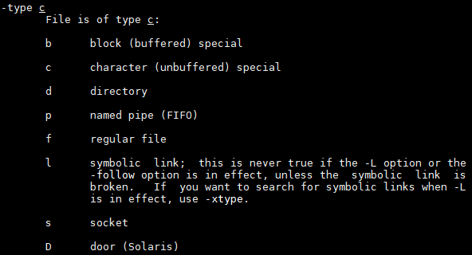 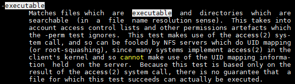I put them together with the properties given and I ran the "find" command below:
find -type f -size 1033c ! -executable
It looks for a file that is size 1033 bytes and it is not executable. The output was ./maybehere07/.file2 and then I read the file I see that the password is: DXjZPULLxYr17uwoI01bNLQbtFemEgo7.
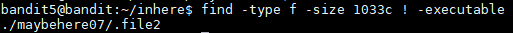I also tried to find the file with the ls and grep command below but I could not figure out how to display the full path of the file.
ls -laR | grep rw-r | grep 1033
This commands looks for all files recursively and displays them the log way. Since it is being display the long way, I grep every file that has the rw-r permissions meaning is not executable and then grep the 1033 for the size and it found the file.
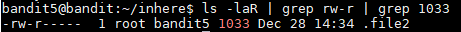Username: bandit6
Password: DXjZPULLxYr17uwoI01bNLQbtFemEgo7
Bandit Level 6 ‚Üí Level 7
http://overthewire.org/wargames/bandit/bandit7.htmlThe password for the next level is stored somewhere on the server and has all of the following properties:
owned by user bandit7
owned by group bandit6
33 bytes in size
For this part I used the find command below to find a file owned by user bandit7, owned by group bandit6 and 33 bytes of size.
find / -user bandit7 -group bandit6 -size 33c 2>/dev/null
/ from root folder
-user the owner of the file.
-group the group owner of the file.
-size the size of the file.
2>/dev/null redirects error messages to null so that they do not show on stdout.
With that command we found the file in the following directory: /var/lib/dpkg/info/bandit7.password. When I read the file I found that the password is HKBPTKQnIay4Fw76bEy8PVxKEDQRKTzs
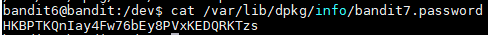Username: bandit7
Password: HKBPTKQnIay4Fw76bEy8PVxKEDQRKTzs
Bandit Level 7 ‚Üí Level 8
http://overthewire.org/wargames/bandit/bandit8.htmlThe password for the next level is stored in the file data.txt next to the word millionth.
When I logged into the profile I saw the data.txt file and when I read it a bunch of lines came up and it looked like all of the lines had the same structure. It was a word followed by some spaces and then a possible password. The hint was that the password is next to the word millionth, so I used the command below to read the file and then grep the word millionth.
cat data.txt | grep millionth
The command only return 1 line and it contained the password:
millionth cvX2JJa4CFALtqS87jk27qwqGhBM9plV
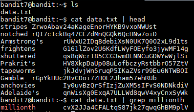Username: bandit8
Password: cvX2JJa4CFALtqS87jk27qwqGhBM9plV
Bandit Level 8 ‚Üí Level 9
http://overthewire.org/wargames/bandit/bandit9.htmlThe password for the next level is stored in the file data.txt and is the only line of text that occurs only once
To do this I ran the command below in order to sort the lines alphabetically and then remove all duplicates from the output.
sort data.txt | uniq -u
The password is: UsvVyFSfZZWbi6wgC7dAFyFuR6jQQUhR
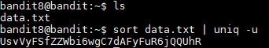Username: bandit9
Password: UsvVyFSfZZWbi6wgC7dAFyFuR6jQQUhR
Reference:
http://www.liamdelahunty.com/tips/linux_remove_duplicate_lines_with_uniq.phpBandit Level 9 ‚Üí Level 10
http://overthewire.org/wargames/bandit/bandit10.htmlThe password for the next level is stored in the file data.txt in one of the few human-readable strings, beginning with several ë=í characters.
According to the hint, the file contains both strings and binary data which can make it difficult to read. In order to sort out the plain text I ran "cat data.txt | string". The next part is to grep the lines that start with the = sign. To do everything in 1 line I used the command below:
cat data.txt | strings | grep ^=
This returned 3 strings:
========== password
========== ism
========== truKLdjsbJ5g7yyJ2X2R0o3a5HQJFuLk
They all start with several = signs and if all of the passwords follow the same format the password should be the last line: truKLdjsbJ5g7yyJ2X2R0o3a5HQJFuLk.
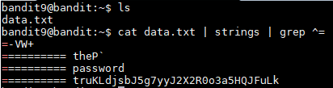Username: bandit10
Password: truKLdjsbJ5g7yyJ2X2R0o3a5HQJFuLk
Bandit Level 10 ‚Üí Level 11
http://overthewire.org/wargames/bandit/bandit11.htmlThe password for the next level is stored in the file data.txt, which contains base64 encoded data
The data.txt contains 1 line that was encoded in base64. In order to decode the file I ran the command below:
cat data.txt | base64 --decode
The output was the following: The password is IFukwKGsFW8MOq3IRFqrxE1hxTNEbUPR
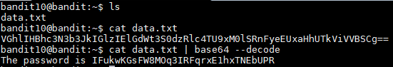Username: bandit11
Password: IFukwKGsFW8MOq3IRFqrxE1hxTNEbUPR
Bandit Level 11 ‚Üí Level 12
http://overthewire.org/wargames/bandit/bandit12.htmlThe password for the next level is stored in the file data.txt, where all lowercase (a-z) and uppercase (A-Z) letters have been rotated by 13 positions
The data.txt file contains 1 line that was encrypted with the ROT13 algorithm. In order to decrypt it, I have to replace every letter by the letter 13 positions ahead. For example, with this encryption the letter a would be replaced with n. The word banana would encrypt to onanan. To decrypt the line I ran the command below:
cat data.txt | tr '[A-Za-z]' '[N-ZA-Mn-za-m]'
The command above send the line to stdout where tr shifts every letter 13 positions. After running that command the output was:
The password is 5Te8Y4drgCRfCx8ugdwuEX8KFC6k2EUu
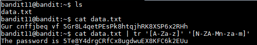Username: bandit12
Password: 5Te8Y4drgCRfCx8ugdwuEX8KFC6k2EUu
Bandit Level 12 ‚Üí Level 13
http://overthewire.org/wargames/bandit/bandit13.htmlThe password for the next level is stored in the file data.txt, which is a hexdump of a file that has been repeatedly compressed. For this level it may be useful to create a directory under /tmp in which you can work using mkdir. For example: mkdir /tmp/myname123. Then copy the datafile using cp, and rename it using mv (read the manpages!)
First we have to create a folder under the tmp directory to do this we run "mkdir /tmp/idk". This will give us a permission error that can be bypass by adding the -p option which will create the necessary parent directories in order to create the folder as explained in the mkdir manual page. Once the folder is created I copied the data.txt file to the folder with "cp data.txt /tmp/idk". In order to decypher the hexdump of the file I ran "xxd -r data.txt > bandit" which reverses the hexdump and saves it into a file named bandit. The hint stated that the file was compressed multiple times so I ran "file bandit" to see if it can determine the compression method used. The output for the command was:
bandit: gzip compressed data, was "data2.bin", from Unix, last modified: Fri Nov 14 10:32:20 2014, max compression
The output says that it was compressed with gzip, so we can add the .gz extension to the file in order to see what is inside. To do so we run "mv bandit bandit.gz", this will create the file and to decompress it I ran "gunzip bandit.gz" which gave us a file named bandit. I tried to read the file with "cat" but I noticed that it was still displaying binary data. I ran "file bandit" again to see what they used to compress the file. The output is below:
bandit: bzip2 compressed data, block size = 900k
It says that the compression was done with bzip2 so I added the bzip2 extension with "mv bandit bandit.bz2" and unzipped the file with the command "bzip2 -d bandit.bzip2" which gave us another bandit file. I ran "file bandit" and the output is below:
bandit: gzip compressed data, was "data4.bin", from Unix, last modified: Fri Nov 14 10:32:20 2014, max compression
It looks like the used gzip again. The hint did stated that it was compressed multiple times so I just have to keep unzipping until I find the next password. I added the .gz extension to the file and unzipped it and ran "file bandit" which gave me the following output.
bandit: POSIX tar archive (GNU)
The next compression was done with tar, so we have to add the .tar extension to the file with "mv bandit bandit.tar", to decompress it I ran "tar -xf bandit.tar" to extract all files. The command gave us a file named data5.bin, I ran the "file data5.bin" and I received the following output:
data5.bin: POSIX tar archive (GNU)
The file was still compressed with tar so I added changed the .bin extension with a .tar extension and decompressed the file and we received a new file named "data6.bin". I ran "file data6.bin" and the output was the following:
data6.bin: bzip2 compressed data, block size = 900k
The file was compressed again with bzip2, so I changed the .bin extension to the .bz2 extension and unzipped the file which gave us a file named data6. I ran "file data6" and the output was:
data6: POSIX tar archive (GNU)
The file is still not fully decompress because they compressed it with tar. I added the .tar extension and extracted the data which gave us a file named data8.bin. Upon running "file data8.bin" I saw the following output:
data8.bin: gzip compressed data, was "data9.bin", from Unix, last modified: Fri Nov 14 10:32:20 2014, max compression
The file was compressed with gzip, so I changed the extension and then unzipped the file. I received a new file named data8 and when I ran "file data8", it said that the data contained ASCII text meaning we finally reached the end of the layers of compression. I ran "cat data8" and I received the next password: The password is 8ZjyCRiBWFYkneahHwxCv3wb2a1ORpYL.
Username: bandit13
Password: 8ZjyCRiBWFYkneahHwxCv3wb2a1ORpYL
Bandit Level 13 ‚Üí Level 14
http://overthewire.org/wargames/bandit/bandit14.htmlThe password for the next level is stored in /etc/bandit_pass/bandit14 and can only be read by user bandit14. For this level, you donít get the next password, but you get a private SSH key that can be used to log into the next level. Note: localhost is a hostname that refers to the machine you are working on.
When I logged into the machine and I ran "ls" I saw a file named sshkey.private which must be the SSH private key the hint was talking about. In order to log into the bandit14 userís profile I ran "ssh -i sshkey.private bandit14@localhost". The -i means that I am using an identity file in order to login to bandit14 on the server since all of the bandit users are on the same machine. After I logged into bandit14 I ran "cd /etc/bandit_pass/" as specified on the hint and then I read file bandit14 which gave us the next password: 4wcYUJFw0k0XLShlDzztnTBHiqxU3b3e.
Username: bandit14
Password: 4wcYUJFw0k0XLShlDzztnTBHiqxU3b3e
Bandit Level 14 ‚Üí Level 15
http://overthewire.org/wargames/bandit/bandit15.htmlThe password for the next level can be retrieved by submitting the password of the current level to port 30000 on localhost.
According to the hint we have to connect to port 30000 on localhost and we have to send a string containing the current password. To do this I ran "nc localhost 30000" and once I saw that I was connected I pasted the password for bandit14 and then I received the following output

Username: bandit15
Password: BfMYroe26WYalil77FoDi9qh59eK5xNr
Bandit Level 15 ‚Üí Level 16
http://overthewire.org/wargames/bandit/bandit16.htmlThe password for the next level can be retrieved by submitting the password of the current level to port 30001 on localhost using SSL encryption.
Helpful note: Getting "HEARTBEATING" and "Read R BLOCK"? Use -ign_eof and read the "CONNECTED COMMANDS" section in the manpage. Next to ëRí and ëQí, the ëBí command also works in this version of that command...
I tried connecting to the port 30001 with the command below which seemed to work and I was able to type in the password of bandit15.
openssl s_client -connect localhost:30001
After I typed in the password I received the following message:
BfMYroe26WYalil77FoDi9qh59eK5xNr
HEARTBEATING
read R BLOCK
read:errno=0
This is the error message the hint was talking about. After reading the man page of openssl I tried looking up the pattern -ign_eof by hitting the / key and typing the string. However I was unable to find anything about it. I then tried to see what options are available for s_client by running openssl s_client -h which was not a valid command but I did get all of the options for s_client. I was then able to find the -ign_eof option the hint was talking about. As explained by the manual "-ign_eof" ignores the input eof. When we run the command below and I typed the password for bandit15 I received the new password.
openssl s_client -ign_eof -connect localhost:30001
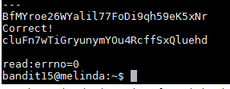Username: bandit16
Password: cluFn7wTiGryunymYOu4RcffSxQluehd
Bandit Level 16 ‚Üí Level 17
http://overthewire.org/wargames/bandit/bandit17.htmlThe credentials for the next level can be retrieved by submitting the password of the current level to a port on localhost in the range 31000 to 32000. First find out which of these ports have a server listening on them. Then find out which of those speak SSL and which donít. There is only 1 server that will give the next credentials, the others will simply send back to you whatever you send to it.
As explained by the hint we have to find which host are up and running SSL. To do this we can run a nmap scan that will look check every port from 31000 to 32000 and check what services is running on that port. To do this I ran the command below:
nmap -v -A -T4 -p 31000-32000 localhost
The -A option in the command allows us to detect the OS, version detection or if there are any scripts running and -v increases the verbosity. The output was as following:
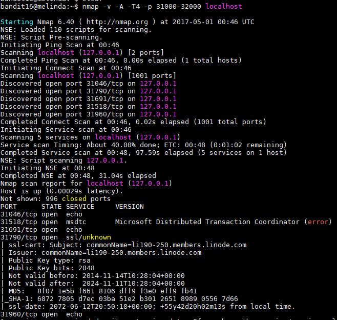As we can see, there are 5 host online and 3 of them are running the echo service 1 of them is running msdtc and port 31790 is running ssl. After connecting to the 31790 port with "openssl s_client -connect localhost:31790" and entering the password for bandit16 I received a private RSA key.
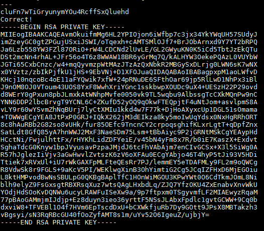I then created a folder with the "mkdir -p /tmp/bandit17" command and then copied the key and saved it to a file named bandit17.key then changed the file permissions with the "chmod 600 bandit17.key" command. I ran "ssh -i bandit17.key bandit17@localhost" and I was able to log into the bandit17ís profile. In the profile I ran "ls" and I found 2 files named "passwords.new" and "password.old" which both have many lines of possible password which some of them seem to repeat. To remove the duplicates between the 2 files I used the "diff passwords.new passwords.old" command which gave us the following passwords:
< kfBf3eYk5BPBRzwjqutbbfE887SVc5Yd
---
> BS8bqB1kqkinKJjuxL6k072Qq9NRwQpR
I tried to log in with both passwords but they did not work. I remembered that in a previous level it said that all passwords are stored in the /etc/bandit_pass folder which I "cd" into and then I ran the "cat bandit17" command and I was able to get the password which I tried and I was able to login.
Username: bandit17
Password: xLYVMN9WE5zQ5vHacb0sZEVqbrp7nBTn
Bandit Level 17 ‚Üí Level 18
http://overthewire.org/wargames/bandit/bandit18.htmlThere are 2 files in the homedirectory: passwords.old and passwords.new. The password for the next level is in passwords.new and is the only line that has been changed between passwords.old and passwords.new
NOTE: if you have solved this level and see ëByebye!í when trying to log into bandit18, this is related to the next level, bandit19
Well since I did this on the previous level. I ran "diff password.new passwords.old" and I received the following output:
< kfBf3eYk5BPBRzwjqutbbfE887SVc5Yd
---
> BS8bqB1kqkinKJjuxL6k072Qq9NRwQpR
I tried to login with both password but only the 1st one worked and just like the hint said I received the "Byebye!" output and I was kicked out.
Username: bandit18
Password: kfBf3eYk5BPBRzwjqutbbfE887SVc5Yd
Bandit Level 18 ‚Üí Level 19
http://overthewire.org/wargames/bandit/bandit19.htmlThe password for the next level is stored in a file readme in the homedirectory. Unfortunately, someone has modified .bashrc to log you out when you log in with SSH.
As I explained in the previous level, as soon as I logged into the machine I received the "Byebye!" output and I was immediately logged out of the machine. I know that all of the userís profiles are in the same machine so I ran the "cd ~bandit18" command which put me in the home directory of bandit18. When I ran "ls" I see that readme file the hint was talking about but Iím not to read it because I do not have permissions. I tried changing user by running "su bandit18" and hoping that it asked me for a password but it did not work because we are not allowed to run use the su command. I tried running a command as a different user using "sudo -u bandit18 -c ëcat readmeí " but it did not work since we don't have sudo privileges. I then moved on to see if I can find another way of accessing the file. I tried logging in using "ftp bandit18@localhost" but it did not worked and I received an error message saying service not known. I tried logging in using the "sftp bandit18@localhost" which asked me for the password and I was able to login but was not able to download the file or reading the file. I read the ssh manual to see if I can find a way to login without it kicking me out immediately. After reading the ssh manual I found 2 options that stood out, -T and -t. The other options were used to either tunnel, forward, or specify login attributes. I tried logging in with the "ssh -T bandit18@localhost" command and I was able to login without getting kicked out. The only thing weird is that I was not getting the typical command prompt "bandit17@melinda:~$". The part where you write the commands was blank, I tried to ran "ls" and I was able to see the "readme" file and I was able to read it and see that the password for bandit19 is: IueksS7Ubh8G3DCwVzrTd8rAVOwq3M5x. For reference, this is what the page looked like for me:
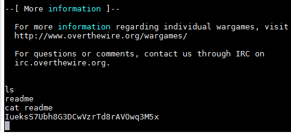Username: bandit19
Password: IueksS7Ubh8G3DCwVzrTd8rAVOwq3M5x
Bandit Level 19 ‚Üí Level 20
http://overthewire.org/wargames/bandit/bandit20.htmlTo gain access to the next level, you should use the setuid binary in the homedirectory. Execute it without arguments to find out how to use it. The password for this level can be found in the usual place (/etc/bandit_pass), after you have used the setuid binary.
After logging into bandit19ís profile, I ran "ls" and I saw the binary file named "bandit20-do". The hint stated that I needed to execute the file, so I did with the "./bandit20-do" command. The output said "Run a command as another user. Example: ./bandit20-do id". I then ran "./bandit20-do id" and I was able to see bandit20ís id information. The script seem to do what it said "run a command as another user". Since the password for bandit20 is in the "/etc/bandit_pass/" I decided to run "./bandit20-do cat /etc/bandit_pass/bandit20" since only bandit20 is able to read the file. The result was that I was able to see the next password which is GbKksEFF4yrVs6il55v6gwY5aVje5f0j
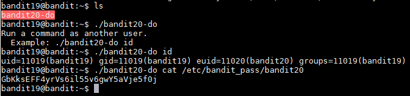Username: bandit20
Password: GbKksEFF4yrVs6il55v6gwY5aVje5f0j
Bandit Level 20 ‚Üí Level 21
http://overthewire.org/wargames/bandit/bandit21.htmlThere is a setuid binary in the homedirectory that does the following: it makes a connection to localhost on the port you specify as a commandline argument. It then reads a line of text from the connection and compares it to the password in the previous level (bandit20). If the password is correct, it will transmit the password for the next level (bandit21).
NOTE: To beat this level, you need to login twice: once to run the setuid command, and once to start a network daemon to which the setuid will connect.
NOTE 2: Try connecting to your own network daemon to see if it works as you think
To start this level I opened two bandit20 windows as explained on the first hint. The first one will be used to run the setuid command and the second one will be to run the network daemon. To start the a network daemon we can use "nc" to receive the information coming in from the setuid script. To do this we first have to pick a random port like "1234" and start listening with "nc". The port number does not seem to be important and this should work with any port that is not being used. I ran the "nc -l 1234 < /etc/bandit_pass/bandit20" to accomplish the 1st part. The second part of the command after the port number sends the current password for verification from the setuid script. Now that we are listening from a response, I used the "./suconnect 1234" command to run the script and get the next password. After running the script I received the confirmation that the password matches and that it send the password for the next level.
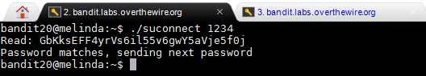On the second window of the bandit20 profile I saw that the password is there.
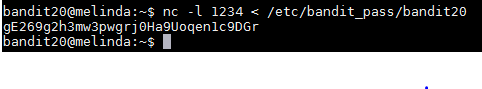I tried to login to bandit21 with that password and I was able to access the profile.
Username: bandit21
Password: gE269g2h3mw3pwgrj0Ha9Uoqen1c9DGr
Bandit Level 21 ‚Üí Level 22
http://overthewire.org/wargames/bandit/bandit22.htmlA program is running automatically at regular intervals from cron, the time-based job scheduler. Look in /etc/cron.d/ for the configuration and see what command is being executed.
According to the hint, there is a configuration for a cron job on "/etc/cron.d/" that will help us complete this level. Cron is a program that will run a specific command or script at a specific time or intervals of time. When I "cd" into the "/etc/cron.d/" folder and I ran "ls", I saw multiple file but I assumed that we have to look at the file named "cronjob_bandit22" since I have to get bandit22ís password. I used "cat cronjob_bandit22" to see what the cron job is doing I saw that it is executing a bash script at every minute of every hour as explained by the stars in the beginning.
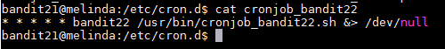The cron syntax specifies that the numbers will specify times when the script will run. The syntax will look for the minutes, hours, day of months, months, and days of week. Since there is all * then the script run at every minute. After knowing when the script will be executed I have to find out what the script does. I "cd" into the "/usr/bin/" folder and read the bash file using "cat" to see what it does.
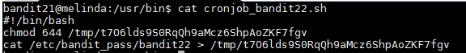The script seems to be assigning the text in the password file bandit22 as that content in the "t7O6lds9S0RqQh9aMcz6ShpAoZKF7fgv" file inside the "/tmp" folder. I ran the "cat /tmp/t7O6lds9S0RqQh9aMcz6ShpAoZKF7fgv" command and I received the password for the next level.
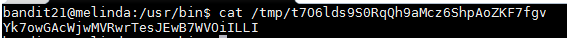Username: bandit22
Password: Yk7owGAcWjwMVRwrTesJEwB7WVOiILLI
Bandit Level 22 ‚Üí Level 23
http://overthewire.org/wargames/bandit/bandit23.htmlA program is running automatically at regular intervals from cron, the time-based job scheduler. Look in /etc/cron.d/ for the configuration and see what command is being executed.
NOTE: Looking at shell scripts written by other people is a very useful skill. The script for this level is intentionally made easy to read. If you are having problems understanding what it does, try executing it to see the debug information it prints.
Just like the previous exercise, there is a cron job configuration on the "/etc/cron.d" folder. When I read the file I saw that it is another bash script being run at every minute.
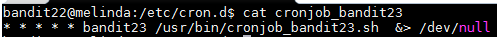I then "cd" into the "/usr/bin/" folder "cat" the file to see what it does.
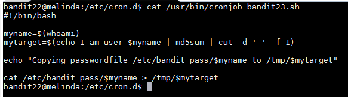According to this script it saves the name of the user running the script which according to the hint is bandit23 to the "myname" variable. It then runs an "echo" command that sends the string "I am user bandit23 to the md5sum command which hashes the string and then pipes that information to the cut command which slips the output string into the 1st part which is the actual hash. Below you will find a picture of how the script works independently.
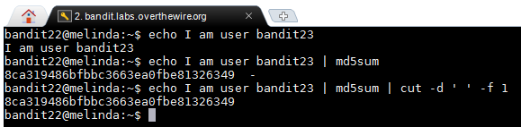Once this part finished it saves the hash to a variable named "mytarget", the hash is 8ca319486bfbbc3663ea0fbe81326349. The next part of the script is that it copies the password for bandit23 in the folder "/tmp/" in file "mytarget". I then "cat /tmp/8ca319486bfbbc3663ea0fbe81326349" which returns the password to the next level.
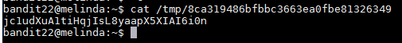Username: bandit23
Password: jc1udXuA1tiHqjIsL8yaapX5XIAI6i0n
Level 23 ‚Üí 24
http://overthewire.org/wargames/bandit/bandit24.htmlA program is running automatically at regular intervals from cron, the time-based job scheduler. Look in /etc/cron.d/ for the configuration and see what command is being executed.
NOTE: This level requires you to create your own first shell-script. This is a very big step and you should be proud of yourself when you beat this level!
NOTE 2: Keep in mind that your shell script is removed once executed, so you may want to keep a copy around...
This level seems to be similar as the 2 before this one. The configuration for the cron job is in "etc/cron.d/" and the name of the file is "cronjob_bandit24". The cron job is running a script named "cronjob_bandit24" in the "/usr/bin/" directory. After moving into that directory and reading the script I see that the script runs and then deletes all of the scrips in the "/var/spool/bandi24" folder. In the second hint they state that I have to write my own script and I have to put it in that folder for when it executes.
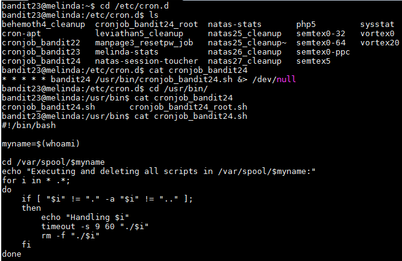I then "cd" into the "/var/spool/bandit24" folder and created a script named "bandit24test.sh" and inside I wrote the following commands:
#!/bin/bash
cat /etc/bandit_pass/bandit24 > /tmp/pleasework
After saving the script I used "chmod" to adjust the permissions so that anybody can execute it. To do this I ran "chmod 777 bandit24test.sh" and waiting for the clock to reach the next minute.
Once I saw that the script was no longer there I knew that the cron job was executed and I then ran "cat /tmp/pleasework" and I received the password for bandit24: UoMYTrfrBFHyQXmg6gzctqAwOmw1IohZ
Username: bandit24
Password: UoMYTrfrBFHyQXmg6gzctqAwOmw1IohZ
Level 24 ‚Üí 25
http://overthewire.org/wargames/bandit/bandit25.htmlA daemon is listening on port 30002 and will give you the password for bandit25 if given the password for bandit24 and a secret numeric 4-digit pincode. There is no way to retrieve the pincode except by going through all of the 10000 combinations, called brute-forcing.
For this level I created a script that runs a for loop which creates all possible combinations of 4 digits and then save the output to a text file named "test.txt". Each line is saved with the password for bandit24 in the front followed by a space and the 4 digit code. The script I wrote is below:
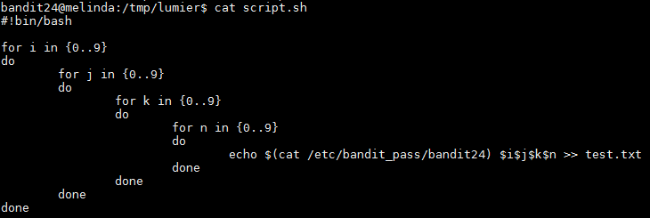To run the script I ran "bash script.sh" and this created the output file with all combinations. I then read the file with "cat" to make sure that it worked and it did. I then proceeded to send the information to the network daemon. To do this I ran "cat output.txt | nc localhost 30002 > password.txt". This command sends every line to the 30002 port using "nc" and the output of the result would be saved to a file named "password.txt". This file was filled with duplicates saying "Wrong! Please enter the correct pincode. Try again.", so I ran the "sort -u password.txt" command which gave me the following output and also the password for bandit25: uNG9O58gUE7snukf3bvZ0rxhtnjzSGzG
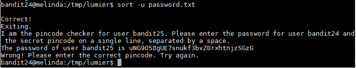Username: bandit25
Password: uNG9O58gUE7snukf3bvZ0rxhtnjzSGzG
| Username | Password |
|---|---|
| bandit0 | bandit0 |
| bandit1 | boJ9jbbUNNfktd78OOpsqOltutMc3MY1 |
| bandit2 | CV1DtqXWVFXTvM2F0k09SHz0YwRINYA9 |
| bandit3 | UmHadQclWmgdLOKQ3YNgjWxGoRMb5luK |
| bandit4 | pIwrPrtPN36QITSp3EQaw936yaFoFgAB |
| bandit5 | koReBOKuIDDepwhWk7jZC0RTdopnAYKh |
| bandit6 | DXjZPULLxYr17uwoI01bNLQbtFemEgo7 |
| bandit7 | HKBPTKQnIay4Fw76bEy8PVxKEDQRKTzs |
| bandit8 | cvX2JJa4CFALtqS87jk27qwqGhBM9plV |
| bandit9 | UsvVyFSfZZWbi6wgC7dAFyFuR6jQQUhR |
| bandit10 | truKLdjsbJ5g7yyJ2X2R0o3a5HQJFuLk |
| bandit11 | IFukwKGsFW8MOq3IRFqrxE1hxTNEbUPR |
| bandit12 | 5Te8Y4drgCRfCx8ugdwuEX8KFC6k2EUu |
| bandit13 | 8ZjyCRiBWFYkneahHwxCv3wb2a1ORpYL |
| bandit14 | 4wcYUJFw0k0XLShlDzztnTBHiqxU3b3e |
| bandit15 | BfMYroe26WYalil77FoDi9qh59eK5xNr |
| bandit16 | cluFn7wTiGryunymYOu4RcffSxQluehd |
| bandit17 | xLYVMN9WE5zQ5vHacb0sZEVqbrp7nBTn |
| bandit18 | kfBf3eYk5BPBRzwjqutbbfE887SVc5Yd |
| bandit19 | IueksS7Ubh8G3DCwVzrTd8rAVOwq3M5x |
| bandit20 | GbKksEFF4yrVs6il55v6gwY5aVje5f0j |
| bandit21 | gE269g2h3mw3pwgrj0Ha9Uoqen1c9DGr |
| bandit22 | Yk7owGAcWjwMVRwrTesJEwB7WVOiILLI |
| bandit23 | jc1udXuA1tiHqjIsL8yaapX5XIAI6i0n |
| bandit24 | jc1udXuA1tiHqjIsL8yaapX5XIAI6i0n |
| bandit25 | uNG9O58gUE7snukf3bvZ0rxhtnjzSGzG |